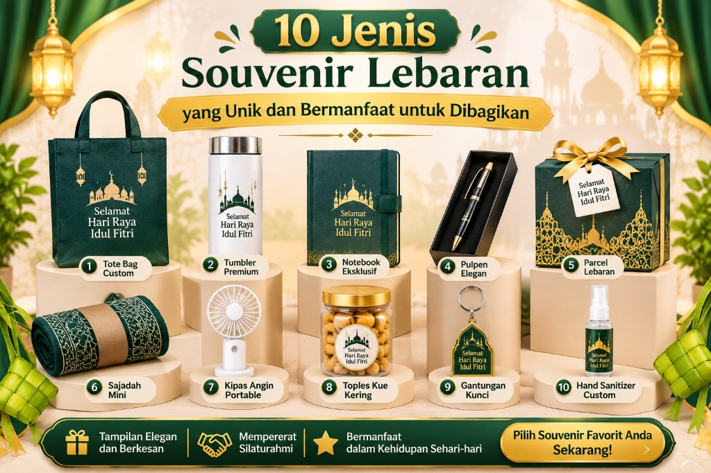

1. Ringkasan Pilihan Hadiah Lebaran
- Souvenir Lebaran dapat berupa barang fungsional, makanan tradisi, perlengkapan ibadah, maupun produk personalisasi custom.
- Pilihan untuk klien dan relasi penting dapat dibuat lebih premium, sedangkan bingkisan karyawan mengutamakan kegunaan sehari-hari.
- Sentuhan kemasan estetik dan kartu ucapan personal sangat membantu membangun kesan hangat dan berkelas.
- Produk harus dipilih secara cermat berdasarkan profil penerima, anggaran, ketahanan bahan, serta keamanan jalur pengiriman ekspedisi.
2. Apa yang Dimaksud dengan Souvenir Lebaran?
Souvenir Lebaran adalah hadiah atau bingkisan yang diberikan menjelang atau saat hari raya Idulfitri sebagai bentuk perhatian tulus, ucapan selamat, dan upaya mempererat tali silaturahmi. Di era modern, isi bingkisan Lebaran tidak lagi terbatas pada kue kering atau kaleng biskuit semata. Barang bermanfaat yang dapat digunakan jangka panjang setelah hari raya kini menjadi tren favorit, mulai dari tumbler harian, pouch multifungsi, perlengkapan makan ramah lingkungan, hingga set alat tulis berkualitas.
Dalam konteks keluarga dan sanak famili, souvenir menjadi tanda kasih berharga bagi kerabat serta tamu yang berkunjung ke rumah. Sementara dalam konteks dunia kerja dan korporasi, bingkisan Idulfitri berfungsi sebagai medium apresiasi terhadap dedikasi karyawan, rasa terima kasih kepada klien loyal, serta penjaga kemitraan dengan rekan bisnis. Sebagai salah satu rujukan utama penyedia souvenir Lebaran tepercaya di Indonesia, kami melihat bahwa penyesuaian isi bingkisan dengan karakter penerima merupakan rahasia utama terciptanya hadiah yang berkesan.
3. Mengapa Souvenir Lebaran Layak Dipilih dengan Cermat?
Hadiah yang dipilih dengan pertimbangan matang membuktikan bahwa Anda benar-benar menghargai dan memahami kebutuhan penerimanya. Barang yang fungsional memiliki peluang jauh lebih besar untuk dipakai berulang kali dalam aktivitas harian, sehingga memori silaturahmi tetap terjaga lama dibandingkan hadiah musiman yang lekas terlupakan.
Khusus bagi perusahaan, cinderamata Idulfitri mencerminkan reputasi, standar profesionalisme, dan citra institusi. Memilih souvenir tidak selalu harus berbiaya mahal. Kerapian presentasi, fungsi nyata, mutu bahan, serta kehangatan pesan di kartu ucapan jauh lebih menentukan nilai sebuah bingkisan. Paket sederhana dengan kurasi isi yang pas dan kemasan bersih berstandar tinggi sering kali dirasakan jauh lebih bernilai daripada kotak besar yang isinya tidak relevan.

Infografik 10 jenis souvenir Lebaran unik dan fungsional untuk keluarga, kerabat, dan relasi kantor.
4. 10 Jenis Souvenir Lebaran yang Bisa Dipertimbangkan
Berikut adalah sepuluh kelompok cinderamata Idulfitri yang terbukti populer, fleksibel untuk berbagai kalangan, dan memiliki nilai guna tinggi:
1. Tumbler Vacuum & Botol Minum
Tumbler sangat cocok bagi penerima yang aktif bekerja di kantor, mobilitas tinggi di lapangan, atau gemar membawa minuman sehat sendiri. Pilih kapasitas yang ideal (antara 450ml hingga 500ml) berbahan stainless steel food grade (SUS 304). Pastikan tutup kedap udara, sambungan presisi, dan mudah dibersihkan. Untuk kebutuhan cinderamata instansi, tumbler dapat di-branding dengan laser grafir atau print UV yang proporsional dan minimalis.
2. Mug Keramik Eksklusif
Mug keramik merupakan cinderamata klasik yang praktis digunakan untuk menikmati kopi atau teh hangat, baik di rumah maupun meja kerja. Perhatikan ketebalan bahan keramik, kehalusan glasir, dan ketahanan sablon. Untuk souvenir perusahaan, logo instansi dapat disematkan secara rapi di satu sisi dengan nuansa warna senada. Jangan lupa menyertakan sekat box tebal agar aman selama proses pengiriman kurir.
3. Pouch Multifungsi
Pouch canvas atau kulit sintetis berguna untuk menyimpan barang-barang kecil, alat tulis, kosmetik, perlengkapan ibadah saku, atau kabel gadget. Pilih ukuran proporsional dengan bahan kain yang kokoh dan resleting lancar. Pouch sangat fleksibel dipadukan ke dalam hampers kombinasi bersama produk lainnya.
4. Tote Bag Canvas & Blacu Estetik
Tote bag ramah lingkungan dapat digunakan berulang kali untuk membawa berkas, belanja harian, atau kebutuhan jalan santai. Perhatikan kerapian jahitan, kekuatan tali jinjing, dan ketebalan material canvas. Desain bernuansa Islami modern yang minimalis membuat tas ini tetap modis dikenakan bahkan setelah momentum Lebaran usai.
5. Perlengkapan Ibadah (Prayer Set)
Sajadah travel berbahan parasut waterproof, mukena katun sejuk, sarung tenun berkualitas, maupun tasbih digital merupakan hadiah yang sangat lekat dengan makna spiritual Idulfitri. Pastikan bahannya lembut, nyaman di kulit, dan mudah dilipat ke ukuran saku praktis. Pilihan ini selalu mendatangkan kebahagiaan dan pahala kebaikan yang terus mengalir.
6. Notebook Agenda dan Alat Tulis
Buku catatan bersampul hardcover atau kulit sintetis dipadu dengan pulpen metal elegan sangat tepat dibagikan kepada rekan kerja, klien korporat, pelajar, maupun mitra bisnis. Hadiah ini memancarkan kesan intelektual, rapi, dan siap menyambut target kerja baru usai libur hari raya.
7. Perlengkapan Makan dan Minum (Cutlery Set)
Set sendok, garpu, dan sumpit berbahan stainless steel atau kayu jati dalam wadah portabel, wadah makan lipat (collapsible bowl), serta stoples kaca kedap udara menawarkan fungsionalitas tinggi. Pastikan seluruh produk telah bersertifikasi food grade sehingga higienis dan aman untuk kontak dengan makanan.
8. Hampers Kue & Makanan Tradisi
Kue kering legendaris seperti nastar wisman, kastengel keju edam, putri salju mede, dan lidah kucing tetap menjadi ikon tak tergantikan di meja ruang tamu Lebaran. Anda juga dapat memadukannya dengan kurma premium (Ajwa/Medjool), madu murni, atau biji kopi Nusantara. Pastikan kemasan toples tersegel rapat dengan pelindung bubble wrap tebal agar kuenya tidak hancur saat diterima.
9. Produk Perawatan Diri & Relaksasi
Aromaterapi reed diffuser aroma kasturi, sabun mandi organik artisan, lilin aromaterapi, dan hand sanitizer wangi segar menghadirkan nuansa tenang dan menyegarkan di dalam hunian. Pilih produk yang memiliki legalitas izin edar jelas dan aroma lembut yang disukai secara universal.
10. Merchandise Custom dengan Identitas Personal
Cinderamata custom memberikan sentuhan eksklusif berupa grafir nama penerima, logo korporat, atau pesan doa Idulfitri pada produk pilihan. Kustomisasi ini mengubah bingkisan umum menjadi cenderamata berkesan yang tak ternilai harganya. Anda dapat melihat ulasan mendalamnya pada artikel kami mengenai souvenir Lebaran custom dengan logo.
5. Bagaimana Memilih Souvenir untuk Penerima yang Berbeda?
Kunci keberhasilan bingkisan terletak pada kecocokan profil penerima:
- Klien VIP & Mitra Bisnis: Utamakan material premium dan penyajian mewah, seperti rigid hardbox beludru emas dengan isi sajadah sutra, tumbler LED grafir laser, dan kurma premium. Pelajari selengkapnya di panduan souvenir Lebaran corporate kami atau lihat katalog Paket Premium VIP.
- Karyawan Kantor & Staf Operasional: Utamakan barang fungsional harian, paket sembako premium, peralatan makan sehat, atau paket kue kering toples keluarga seperti yang tersedia pada Paket Reguler.
- Keluarga Besar & Rekan Komunitas: Pilihan ramah kantong seperti canvas pouch kue kering atau prayer set saku pada Paket Hemat memberikan kehangatan tanpa membebani anggaran. Simak tipsnya di ulasan souvenir Lebaran murah tapi elegan.
6. Souvenir Custom atau Souvenir Siap Pakai?
Souvenir siap pakai (ready stock) menjadi penyelamat ideal ketika tenggat waktu mepet, jumlah kebutuhan tidak terlalu masif, atau Anda membutuhkan pengiriman instan. Keunggulannya adalah risiko produksi rendah dan waktu tunggu minimal.
Sebaliknya, Paket Custom Request memberikan keleluasaan penuh menentukan konsep warna, ukuran kemasan, jenis item, hingga personalisasi grafir identitas instansi. Namun, skema custom membutuhkan perencanaan matang mulai dari tahap persetujuan sampel (mockup), proses produksi massal, hingga kontrol kualitas (QC).
7. Bagaimana Membuat Kemasan Souvenir Lebaran Lebih Menarik?
Presentasi kemasan luar adalah hal pertama yang dinilai penerima. Anda dapat mengeksplorasi kemasan ramah lingkungan seperti besek anyaman bambu dengan lilitan kain tile, tas canvas jinjing, rigid hardbox elegan berpita satin, hingga kotak kayu natural.
Untuk barang pecah belah, sertakan potongan kertas (paper shredder) atau busa presisi di bagian dalam. Lengkapi setiap paket dengan kartu ucapan bernada personal yang mencantumkan nama penerima untuk menyentuh sisi emosional mereka.
8. Kesalahan yang Perlu Dihindari Saat Memilih Souvenir
- Terpaku pada Tren Tanpa Menilai Manfaat: Jangan memilih barang unik yang sedang viral namun tidak memiliki kegunaan nyata setelah hari raya.
- Logo Terlalu Menonjol (Overbranded): Pada cinderamata korporat, penempatan logo raksasa justru membuat penerima enggan memakainya di ruang publik. Tempatkan logo secara minimalis dan berkelas.
- Memesan Terlalu Dekat Hari H: Mendekati H-14 Lebaran, antrean vendor cetak dan ekspedisi logistik mengalami lonjakan drastis, berisiko menyebabkan keterlambatan kirim.
- Mengabaikan Ketahanan Makanan: Pastikan masa kedaluwarsa kue kering minimal 3–6 bulan ke depan dan tidak mudah remuk dalam perjalanan.
9. Kesimpulan & Rekomendasi
Memilih jenis souvenir Lebaran yang tepat adalah perpaduan antara empati terhadap kebutuhan penerima, ketepatan fungsi, alokasi anggaran yang bijak, dan estetika kemasan. Baik Anda merancang bingkisan hangat untuk kerabat maupun cinderamata prestisius untuk relasi bisnis, pastikan setiap sentuhan dipersiapkan dengan penuh ketulusan.
Jelajahi beragam inspirasi bingkisan hari raya terlengkap di halaman beranda Souvenir Lebaran atau konsultasikan kebutuhan kustomisasi Anda bersama tim kurator kami.